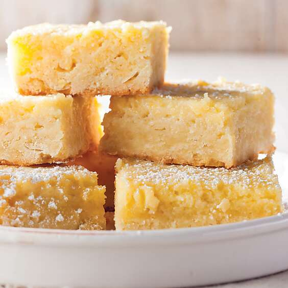

Odins Project

How to make Southern Chess Squares
Southern Chess Squares consist of two simple layers. A cake mix crust with chopped pecans topped with a buttery cream cheese layer combine to make one scrumptious bar. Together they are fabulously sweet. If you do not have an extreme sweet tooth, they may not be for you. And because they are so sweet, they are best cut into little squares.
-
In a large bowl mix together a box of yellow cake mix ( I use Betty Crocker or Duncan Hines), a cup of unsalted butter that has been melted and 1 egg. Mix in 1 cup of chopped pecans and press the mixture into the bottom of a 9×13-inch pan lined with parchment paper.
-
Next use an electric mixer to beat 2 8-ounce blocks of softened cream cheese together with a 1-pound box of powdered sugar. It’s easiest if you beat the cream cheese by itself briefly and then mix in the powdered sugar in 3 or 4 additions.
-
Once smooth, beat in 2 eggs and pour the mixture over the crust. Bake for about 45 minutes at 350 degrees. Let cool before slicing.
Leftovers should be stored in the refrigerator and they taste great cold or at room temperature.
Homemade Ramen

Ramen is one of my favorite comfort foods, especially when the temperatures drop! It’s important to note that this is NOT the ramen that I’m sure we’ve all had at some point in life, college days maybe? The days before a paycheck when you realize you only have a couple dollars to your name. I’m sure we’ve all had similar experiences.
-
Sliced Mushrooms: Regular brown mushrooms work great here! You can also use shiitake mushrooms.
-
Minced Garlic: Makes the broth nice and savory!
-
Ginger Paste: A classic ingredient in Asian cuisine. This adds zip to the flavor of the broth.
-
Sliced Mushrooms: Regular brown mushrooms work great here! You can also use shiitake mushrooms.
-
Chicken Stock: Chicken broth is typically what I have on hand and great for a savory soup base. If you want your ramen to have more of the classic Tonkotsu flavor, use pork broth instead. You can also use vegetable broth as a vegetarian/vegan alternative.
-
Water: Adjusts the consistency of the ramen soup.
-
Soy Sauce: Add a splash for savory flavor!
-
Baby Bokchoy: I love adding greens to ramen. These can be chopped or left whole. You can also use spinach!
-
Instant Ramen Noodles: You only want the uncooked noodles. Throw out those seasoning packets! You can also use fresh ramen noodles if you can find them.
-
Instant Ramen Noodles: You only want the uncooked noodles. Throw out those seasoning packets! You can also use fresh ramen noodles if you can find them.